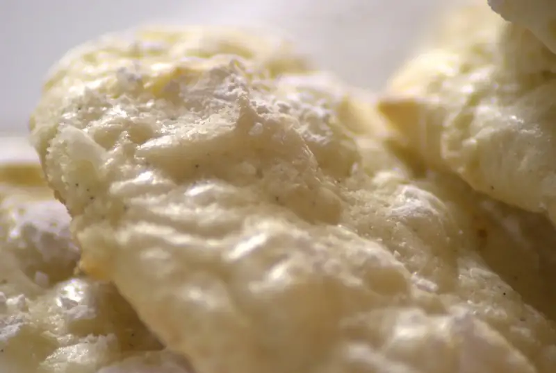
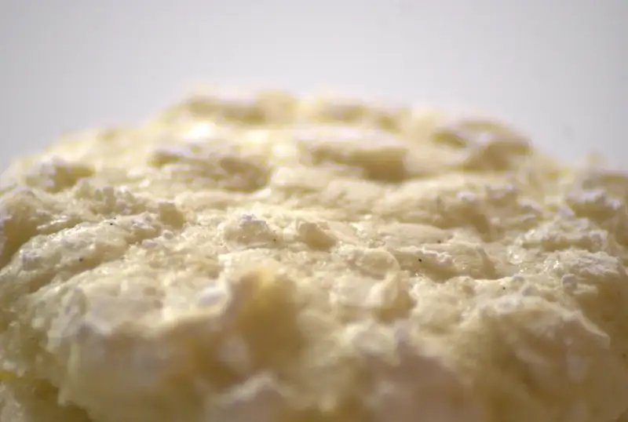

Galletas de vainilla y limón

{kind=link}

{kind=link}
La receta, tal como la encontré en reddit la puedes ver aquí en ningún lado!, no se porqué, pero quitaron el post de esta receta en el blog original. En el post en inglés de esta receta decía que no había mucho que agregarle mas que el refrigerar la masa antes de poder dividirla porque quedó muy suelta.
Ingredientes
- 1/2 tz mantequilla
- 1 tz azúcar
- 1 vaina de vainilla, raspada
- 1 huevo entero
- ralladura de 1 limón
- 1 cda jugo de limón
- 1/4 cta sal
- 1/4 cta polvo para hornear
- 1/8 ct carbonato
- 3/4 tz harina de uso general
- 3/4 tz harin de pastel (harina baja en proteína)
- ~ 1/2 tz azúcar glass
Procedimiento
1. Precalienta el horno a 350F.
2. Coloca una hoja de papel encerado para hornear en una charola de hornear.
3. En un tazón mediano cierne las harinas, sal, carbonato y polvo par hornear, reserva.
4. En una batidora acrema la mantequilla y el azúcar en velocidad media-alta hasta que esté ligero ~7 minutos.
5. Agrega la raspadura de la vainilla, ralladura de limón y el huevo, bate hasta que se combine
6. En mitades, agrega los ingredientes secos hasta que se incorporen
7. Con una medida de 2 cucharadas, haz bolas de la masa, paseándolas por azúcar glass una a la vez para que queden cubiertas.
8. Colócalas en el papel para hornear apróximdamente a 5 centímetros una de otra.
9. Hornea por 13 minutos o hasta que se doren las orillas pero estén un poco suaves de enmedio.
10. Transfiere a una rejilla para enfriarlas.